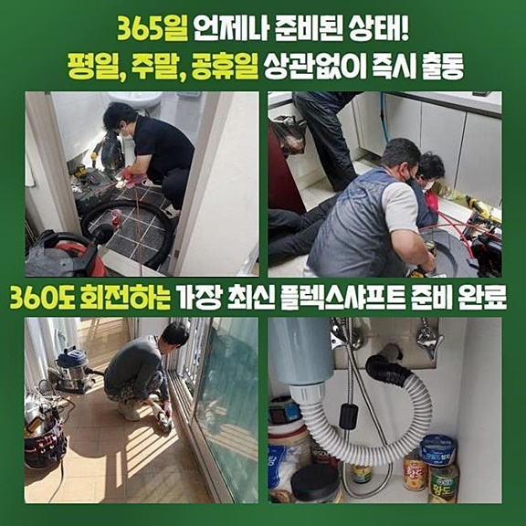
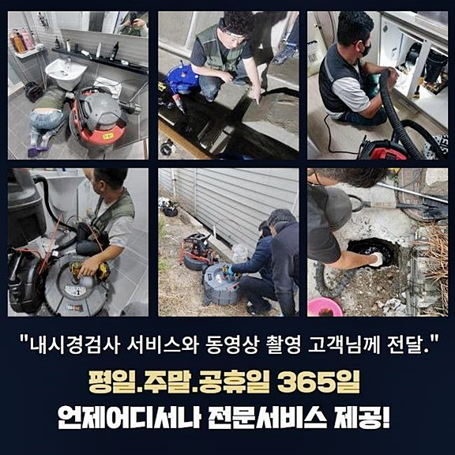
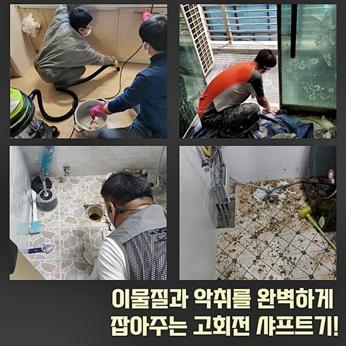
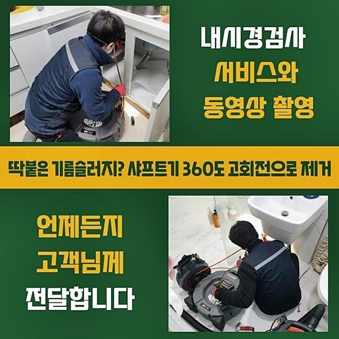
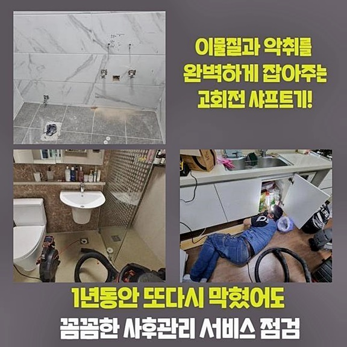
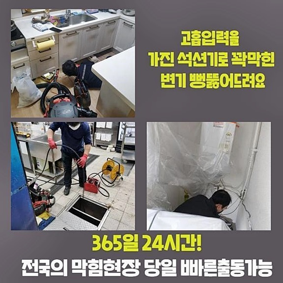

🏠 구로구 구로동욕실뚫음 수궁동 배관내시경카메라 통수전문
용인시 처인구 배관막힘 전문 시공 후기

📋 작업 개요
- 위치: 용인시 처인구, 수원시 영통구, 화성시 동탄
- 서비스 유형: 배관막힘, 고압세척, 내시경점검
- 작업 일시:
- 업체명: 하수구수사대 (010-5615-2118)
🔍 문제 상황
구로구 구로동욕실뚫음 수궁동 배관내시경카메라 통수전문
집안에서 하수 시설을 활용하는 과정에서 많은 원인들로 말미암아 막혀버리는 사고가 어쩔 수 없이 생길 수 있습니다
상가건물이나 주거시설 등 수많은 장소들에서 이러한 하수시스템의 고장은 빈번하게 촉발되는 일이죠
수로의 회복을 위하여 전문가를 물색 중이시라면 배관의 고성능 툴을 이용하여 무엇이 잘못됐나 점검하고 하자 없는 시공력을 보이는 곳을 고르는 안목이 필요합니다
오늘 찾아간 방문지는 비밀번호가 걸려있지 않은 공동 화장실이었고 거의 물난리가 났다며 다급하게 방문해 달라 요청하셨어요
건물의 이용객 모두가 출입을 하는 곳이니만큼 보편적인 집들에 비해서는 정체를 빚는 일들이 보다 흔하게 도래할 수 있습니다
이번에 전화주신 당사자분은 이만큼 심각하게 물이 역류하는 상황은 처음 마주하게 된 것이라며 어찌할 바를 몰라 힘들었다 하셨어요
영업을 하고 있는 업주들도 각자 다용도로 사용하는 시설물이라는 특성상 빠른 수선이 들어가야 한다고 인지되어서 장소로 향하게 되었네요
단순한 막힘으로 추정되는 상담을 통해서 찾아가 보면 막혀버린 동기를 추적할 때 스펙트럼이 넓게 나와서 다중적인 검사를 거치면서 동기가 되는 씨앗을 찾아내는 안목있는 업체에 맡겨야 합니다
공용화장실에 들어가서 작업에 대한 준비를 마치고 결함의 축이 된 부분과 얼마나 사태가 심각한지를 탐색을 해주었습니다
많은 곳을 해결하다 보면 작업지 내측에서의 조사로도 원만하게 조치를 취할 수 있는 곳이 있기도 하지만 동시에 내외부의 하수구를 전적으로 철저히 상황을 분석해야만 하는 상황들도 있어요

🔎 원인 분석
💡 전문가 진단: 정밀 진단 장비를 사용하여 슬러지의 고착 여부를 판명하고 타격/세척 작업을 실시했습니다.
이번에 찾은 현장 역시 외부의 하수관에 이르기까지 결함이 존재하는 상황이라서 완성에 이르기 까지 다소 만만치 않았네요
구릿구릿한 냄새가 공기에 자욱하게 퍼져버린 상황이었고 거기다 범람 현상까지 위생을 저해하고 있었으므로 원인 조사에 근본을 두고 스타트를 끊어야 했어요
곳곳에 짙게 퍼져버린 고약한 냄새가 올라오는 장소부터 시작해서 중점을 두고 확인해 보았더니 더러운 오염물질과 찌꺼기들로 인하여 물이 이동하기 불가할 정도라 싶었네요
배관이 한 줄기 같아보여도 바깥쪽으로 가는 관로에 연계되어있는 시스템이면 한 출입구만 봉쇄되더라도 범람이나 중증 막힘이 충분히 생길 수 있습니다
검토에 들어간 한 구멍만 검토해 봐도 본 하수구 시설이 중태에 빠졌다는 것을 감을 잡을 수 있었는데요
굵은 입자의 모래 알갱이도 다량 누적되어 있었고 여러 찌꺼기들이 뭉쳐있는 바람에 진단 장비를 배치하는 단계도 곤혹스러웠습니다
일단 진입을 시켜야 하니 겉부분에 끼인 물질을 제거하고 진단 기기가 들어갈 수 있는 이동 통로를 뚫어서 디테일하게 둘러보며 분석해 봤습니다
하수구의 곤란을 마주하여 해결책을 팔방으로 찾으시던 분들 중 다급하신 마음에 뚫어뻥같은 도구로 작업을 단행하는 분들도 계세요
전문적인 도구가 결여된 채로 뚫어내려는 접근법만 써서는 퀄리티 높은 배관청소는 도출하기 힘들 겁니다
누적된 이물질은 시간이 가면갈수록 딱딱해지면서 배관에 고정이 되기 때문에 뜯어내면서 아무래도 큰 타격감을 부여할 수 있습니다
게다가 뭉쳐있는 정도롤 더 어렵게 만들 수도 있는 문제인만큼 필수적으로 여러 케이스를 다뤄온 전문가에게 요청을 해서 막막한 상황을 타개해야 합니다
첫 작업에서 활용하는 석션기는 흡수능력이 강한 장비인 만큼 부피감이 크고 묵직한 노폐물까지 시원스럽게 척결할 수 있습니다

🔧 작업 과정
오물들을 일차적으로 필터링하는 커버를 모두 벗기고 석션을 간단히 실행했는데도 석션기 통을 열어보니 여러 종류의 이물들이 바깥으로 뽑혀 나왔더군요
다음은 옥외로 향하는 파이프 경로 속도 현황을 판별해 보니까 경로의 중앙부 측면이 이미 침범되어 버린 것을 목도하게 됐네요
수로의 폭이 여유롭다거나 크지 않은데다가 토사물과 찌꺼기들이 얽힌 채 강하게 고정되어 정상 배출로를 좁다랗게 막아서고 있었네요
조금씩 유입된 작은 입자들이 부피가 날로 커지게 되니 배수가 이뤄지지 못하고 내압을 못견뎌 역류까지 야기되었다고 추론됐네요
앞선 작업과 매한가지로 석션의 호스를 배치하여 내부 세척을 도와드렸는데 아까보다 곱절은 더 많이 물에 한동안 고여있던 물질들이 잔뜩 뒤섞여서 주르륵 뿜어져 나오더라고요
많은 보수 작업을 해보면 파이프 벽을 따라 오물이 다닥다닥 이어진 곳들도 흔하게 목격됩니다
처리하기 힘든 케이스라면 세정 클리너나 락스 등을 쓰는 청소 방식만 가해서는 상태에서 회복시키기 힘들어요
약간 배수가 회복되는 듯 순간 좋아졌다가도 금세 끝없이 부메랑처럼 돌아오니 뚫기 위해 쓰는 에너지만 헛되이 더 들어가는 것입니다
야외 정화조까지도 막힌 곳이 대다수라서 여러 요인들을 종합해서 놓치지 말고 세척해야 합니다
배관의 건강은 물론 효율적인 작업 계획을 세워서 빠른 속도로 뚫어내는 업무에 집중해 나갔습니다
많은 곳이 오염됐다면 이물질에서 형성되는 고약한 냄새도 악화되어갈 것이므로 대수롭지 않게 여기시지 말고 지체하는 시간 없도록 내부 정비를 요청해야 합니다
배관의 형상을 따라서 오염원이 끈적하게 들러붙어 흔들림 없이 유지됐기에 높은 압력의 물살을 통하여 문제 부위를 처리하기로 했어요
고온의 물줄기를 목표한 곳에 정확히 발사해서 평이한 기기만으로는 드라마틱하게 개선되지 않은 접착된 노폐물의 내역을 말끔하게 헹구고 녹여내는 과정을 물줄기가 수습해 주는 것이죠
거대한 정화조 시설이나 퇴수구의 경우에는 소규모의 장비만 동원해서는 극복되기 힘든데 이럴 때 고압 분사 기기를 사용하면 효율이 높아요
고정력이 상당한 영역이라면 압력을 증대시켜서 이를 해결될 수 있도록 완벽주의로 작업한 덕분에 찌꺼기가 탈락되는 걸 결국 얻어낼 수 있었어요
이러한 고압의 물줄기로 작업한 결과 배수관이 매끈매끈해져서 비로소 해방감을 느낄 수 있었네요
문제가 심한 곳에서도 여타 청소장비를 오래 작동시키는 것보다 하수관에 집적된 묵은 때들을 무리 없이 커버할 수 있으니 다양하게 사용한답니다
옥외 시설물에 대한 청소를 끝마치게 된다면 화장실로 들어가서 통수검사를 실시하면서 기능회복이 됐나 재차 확인해 보게 됩니다
배관의 곳곳에 끼어있던 문제점을 전반적으로 추스르고 보니 물씬 풍기던 악취문제도 순식간에 잡혀서 고객님께서도 만면에 웃음이 가득해 지셨습니다


✅ 작업 완료
일상에서도 하수관의 고장은 뜬금포로 어떤 장소라도 발생할 수 있기때문에 스스로 고치기보다는 전문 업체를 찾으시는 편이 좋습니다
풍부한 현장 경력을 자랑하고 수리 후에도 지속적 관리를 해주는 곳으로 선정하시는 게 좋을 겁니다
평범한 막힘 증세를 호소하는 사건이라도 빌딩 자체의 노후화 정도도 다르며 배관 설치 장소도 분명 별도의 특성이 있으니 많은 요소를 따져본 후 작업 요강을 정하게 됩니다
문제의 원인을 잘 찾고 누락분 없이 수습해주는 전문진을 찾으셔야만 정상화가 된 하수구 시스템을 경험하실 수 있게 됩니다!
늦은 시간대라고 하더라도 내 집이라고 여기고 따뜻하게 응대해 드릴게요



⚠️ 하수구 배관 막힘 예방 및 관리 가이드
- ✅ 머리카락, 비닐, 물티슈 등 물에 분해되지 않는 이물질은 절대 흘려보내지 마세요.
- ✅ 기름기 많은 식기는 설거지 전 키친타올로 먼저 기름때를 닦아내세요.
- ✅ 주기적으로 배수구에 뜨거운 물을 가득 부어주어 유지방 고착을 방지하세요.
- ✅ 작업 후 1년 이내 재발 시 무상 A/S 보증 서비스를 제공합니다.
💡 핵심 정리
- 확실한 장비 작업(내시경 점검 및 샤프트 스케일링)으로 원인을 뿌리 뽑습니다.
- 작업 후 1년 이내에 동일한 부위 재발 시 100% 무상 A/S 서비스를 보장합니다.
- 서울 · 경기 · 인천 전 지역에 24시간 언제든 긴급 출동할 수 있도록 항시 대기 중입니다.
❓ 자주 묻는 질문 (FAQ)
🚨 용인시 처인구 배관막힘 문제로 고민이신가요?
정확한 원인 진단과 확실한 시공으로 재발 없는 해결을 약속드립니다.
24시간 긴급 출동 | 서울 · 경기 · 인천 전지역 | 1년 내 재발 시 무상 A/S